Free tech tips for Bridlington and the East Riding
Plain-English help with phones, computers and staying safe online. Free, with nothing to sign up for.
Latest tips

Save a New Contact
If someone new rings you, save their name in your phone. Then next time, you'll see who it is before you answer.

Calls keep dropping indoors? Use Wi-Fi calling
Does your mobile signal drop out indoors? Wi-Fi calling lets your phone make and take calls over your home Wi-Fi instead.

World Diabetes Day
It's World Diabetes Day. Whether you have diabetes or want to lower your risk, these free tools can help.
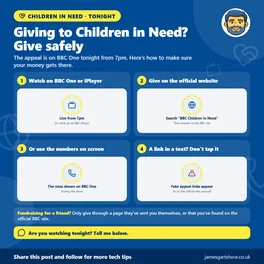
Giving to Children in Need? Give safely
BBC Children in Need is on BBC One tonight from 7pm. Big appeals like this sometimes attract fake donation links, so here’s how to give safely.
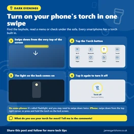
Phone Torch
With the darker evenings, here's a reminder that every smartphone has a torch built in. Handy for finding the keyhole or reading a menu.
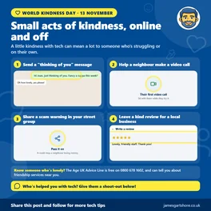
World Kindness Day
It's World Kindness Day today. A little kindness with tech can mean a lot to someone who's struggling, or who's on their own.
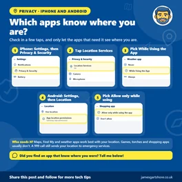
Location Permissions
Did you know some apps can see where you are all the time, even when you're not using them? It only takes a few taps to check.
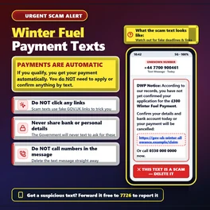
Winter Fuel Payment Texts
Winter Fuel Payments start going out from mid-November, and scam texts about them are going round again.
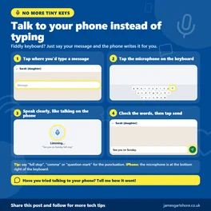
Talk Instead of Typing
If the keyboard on your phone is fiddly, you can talk to it instead and it writes your message for you.
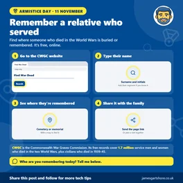
Remember a relative who served
Today is Armistice Day. If you’d like to find out more about a relative who died in the First or Second World War, there’s a free website that can help.
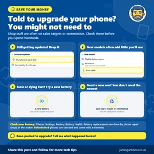
Do You Need a New Phone
Has a phone shop told you it's time to upgrade to the latest model? Before you spend hundreds of pounds, it's worth knowing that shop staff are often...
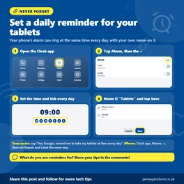
Medication Reminder
Here's a simple way to make sure you never forget your tablets. Your phone's alarm can go off at the same time every day, with its own name.
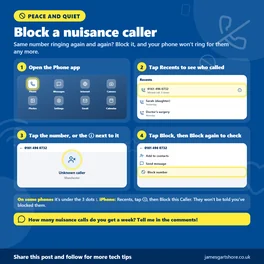
Block a Nuisance Caller
Is the same number ringing you again and again? You can block it, and your phone won't ring for them any more.
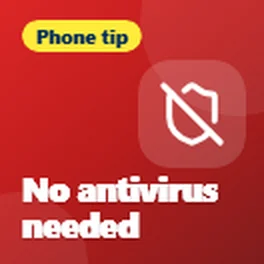
Phone Antivirus
I wanted to share something that catches a lot of people out.
Scam Texts
I wanted to share a warning about the scam texts going round at the moment, as there seem to be more than ever this autumn.

iPhone Coloured Dots
Have you ever noticed a little coloured dot, or a coloured bubble behind the time, at the top of your iPhone screen? It's your iPhone telling you what...

No Charger In The Box
Bought a new phone or laptop, or thinking of it? Check the box, because some don't come with a charger any more.
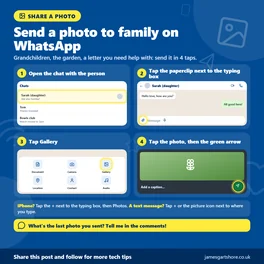
Send a Photo on WhatsApp
Here's how to send a photo to family on WhatsApp, whether it's the grandchildren, the garden or a letter you need help with.

Lest we forget
Remembrance Sunday is today, 8 November, and Armistice Day is on Wednesday 11 November. On both days there is a two-minute silence at 11am.
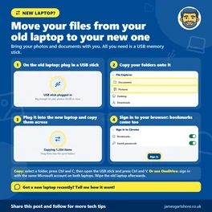
Move Files to a New Laptop
Got a new laptop? Here's how to bring your photos and documents across from your old one. All you need is a USB memory stick.
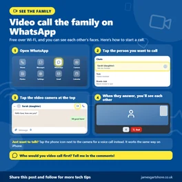
WhatsApp Video Call
If you've got WhatsApp, you can video call your family for free over Wi-Fi and see each other's faces. Here's how.
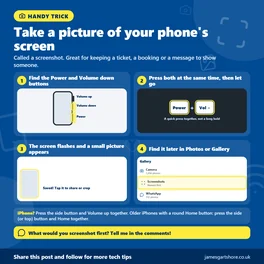
Take a Screenshot
Did you know you can take a picture of whatever is on your phone's screen? It's called a screenshot, and it's handy for keeping a ticket, a booking or...
Scam Emails
I wanted to share a warning about scam emails, as there are a lot going round at the moment pretending to be from well-known organisations.
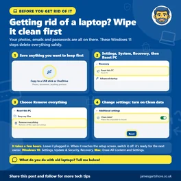
Wipe an Old Laptop
Getting rid of an old laptop? Before you sell it, give it away or recycle it, wipe it clean. Your photos, emails, saved passwords and banking details...
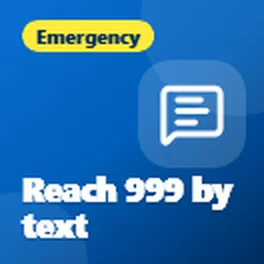
999 Deaf Access
I wanted to share some free services that let people who are deaf, hard of hearing or find it hard to speak contact 999 in an emergency. Many people...
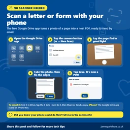
Scan a Document with Your Phone
Did you know you can scan a letter, form or receipt with your phone and turn it into a PDF, ready to email, without a scanner? The free Google Drive...
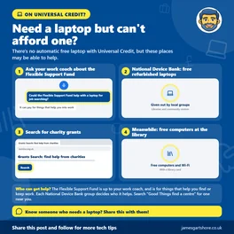
Laptop Help on Universal Credit
I'm often asked if you can get a free laptop on Universal Credit. There's no automatic laptop that comes with it, but there are places that may be able...
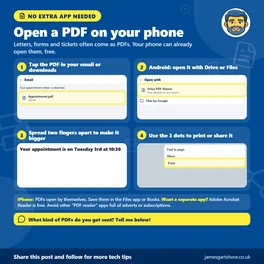
Open PDFs on Your Phone
Letters, forms, tickets and bills often arrive as PDF files. People often ask me which app they need to open them. The good news is your phone can...
Subscriptions Check
I wanted to share a quick money-saving tip: checking for subscriptions you might be paying for without realising.
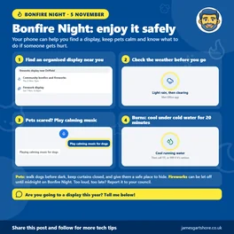
Bonfire Night
It's Bonfire Night tomorrow! 🎆 Here are a few ways your phone can help you enjoy it safely.
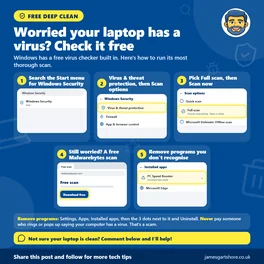
Check Your Laptop for Viruses
Worried your laptop might have a virus? Windows comes with a free virus checker, and here's how to run its most thorough scan yourself.
WhatsApp Scams
I wanted to share a warning about two WhatsApp scams that are really common at the moment.
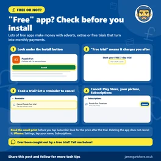
Free Apps and Free Trials
Lots of apps say they're "free", but some make their money in other ways: adverts, paid extras, or free trials that quietly turn into weekly or monthly...
Scam Calls
I wanted to share some ways to cut down on scam and nuisance calls, as there's a new type going round that's worth knowing about.
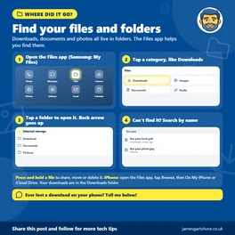
Find Files and Folders on Your Phone
Downloaded a form or a letter on your phone and can't find it? Everything on your phone is kept in folders, and the Files app helps you find them.
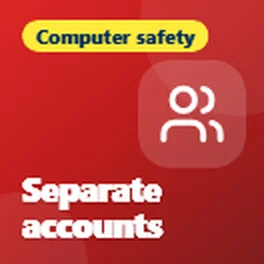
Separate Accounts
I wanted to share a simple tip that can make a big difference to keeping your computer safe: using separate accounts for different things.

Phone Running Slow
Is your Android phone getting slower? Apps leave clutter behind as you use them. These free steps tidy it up, without losing any of your photos or...
Bank Call Scams
I wanted to share a warning about one of the most costly scams going round at the moment: phone calls from people pretending to be your bank or the police.
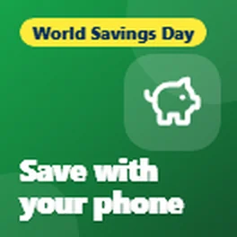
World Savings Day
Yesterday was World Savings Day, so I wanted to share some free tools that can make saving a little easier, even when money is tight.
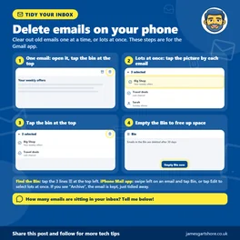
Delete Emails on Your Phone
Is your email inbox full of old messages, offers and newsletters? Here's how to clear them out on your phone, using the Gmail app.
Halloween
With Halloween tonight, I wanted to share a few ways tech can help, whether you're looking forward to trick or treaters or would rather have a quiet...
Media Literacy Week Day 8
It's the last day of Global Media and Information Literacy Week, so I wanted to finish with some free resources for helping children and grandchildren...
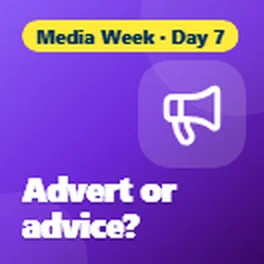
Media Literacy Week Day 7
It's day seven of Global Media and Information Literacy Week, and today's tips are about telling adverts and fake reviews apart from genuine advice.
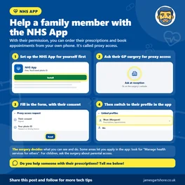
NHS App for Carers and Families
Do you help a parent, partner or family member with their health? With their permission, you can order their prescriptions and book their appointments...
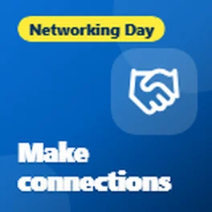
Online Networking Day
Today is World Online Networking Day, which is all about making and keeping connections online. Whether you'd like to get back in touch with old...
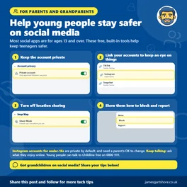
Young People on Social Media
If you've got children or grandchildren on social media, here are some simple, free ways to help keep them safer. Most social media apps are for ages...
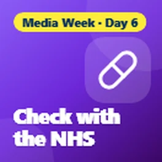
Media Literacy Week Day 6
It's day six of Global Media and Information Literacy Week, and today I wanted to talk about health information online.
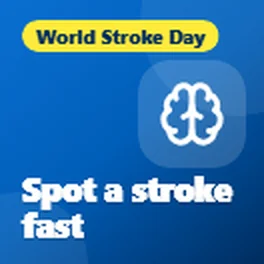
World Stroke Day
Today is World Stroke Day, so I wanted to share how to spot the signs of a stroke, and how your phone can help in an emergency.
Family Learning
With half term here and October being Family Learning Festival month, I wanted to share some free apps and websites you can enjoy with the...
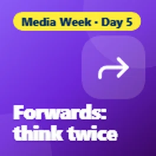
Media Literacy Week Day 5
It's day five of Global Media and Information Literacy Week, and today's tips are about WhatsApp forwards and chain messages.
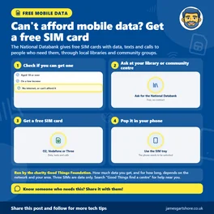
National Databank Free SIM
Did you know there's free mobile data for people who can't afford it? The National Databank, run by the charity Good Things Foundation, gives out free...
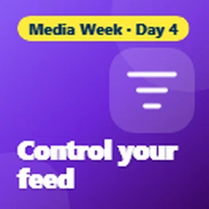
Media Literacy Week Day 4
It's day four of Global Media and Information Literacy Week, and today I wanted to share some built-in Facebook tools that let you take more control...
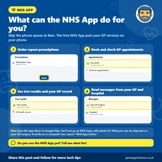
What the NHS App Can Do
Tired of ringing the doctors at 8am? The free NHS App puts lots of your GP services on your phone.

Add a Bank Card to Google Wallet
Did you know you can pay with your phone instead of your bank card? Adding your card to Google Wallet means you can still pay if you've left your purse...
Media Literacy Week Day 3
It's day three of Global Media and Information Literacy Week, and today's tip is about where you get your news.
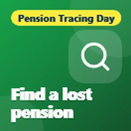
Pension Tracing Day
Today is National Pension Tracing Day, so I wanted to share some free government tools that can help you track down any pensions you may have lost...
Get Online Week Day 7
It's the last day of Get Online Week, so I wanted to finish by sharing where you can get free help with technology, because you don't have to work it...
Media Literacy Week Day 2
It's day two of Global Media and Information Literacy Week, and today I wanted to share some free tools for checking whether a photo is real or made by AI.
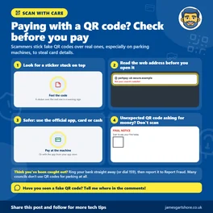
QR Code Payment Safety
A quick warning about QR codes, those square barcodes you scan with your phone camera. Scammers stick fake ones over real ones, especially on car park...
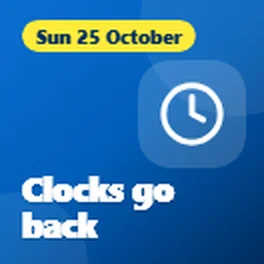
Clocks Go Back
Just a quick reminder that the clocks go back an hour tonight, at 2am on Sunday morning. That means an extra hour in bed, but also a few clocks to check.
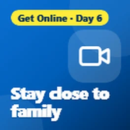
Get Online Week Day 6
It's day six of Get Online Week, and today's tips are about staying close to family and friends.
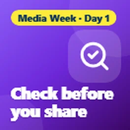
Media Literacy Week Day 1
Today is the start of Global Media and Information Literacy Week, which is all about being able to tell what's real and what's not online. With so many...
Get Online Week Day 5
It's day five of Get Online Week, and today I wanted to share some help for anyone who doesn't have a device or internet at home.
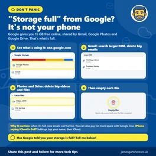
Google Storage Full
Has your phone or email told you "your Google storage is full"? Don't panic: it isn't your phone that's full. It's the free online space Google gives you.
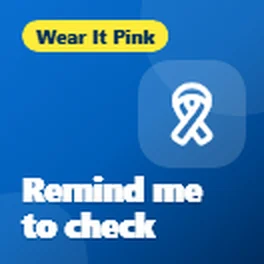
Wear It Pink
Today is Wear It Pink day for Breast Cancer Now, so I wanted to share some free ways your phone can help remind you to check your chest regularly.
Get Online Week Day 4
It's day four of Get Online Week, and today I wanted to talk about passwords, because they're something almost everyone struggles with.
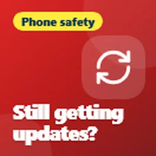
Phone Still Safe
I wanted to share a quick check you can do to see if your phone is still safe to use for things like banking and email.
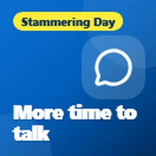
Stammering Awareness Day
Today is International Stammering Awareness Day, so I wanted to share some free tech that can make life a bit easier for anyone who stammers.
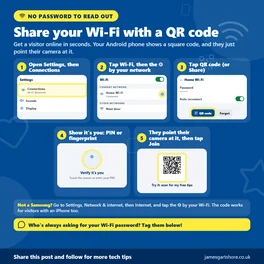
Share Wi-Fi with a QR Code
When family or friends visit and ask for your Wi-Fi password, there's no need to read out a long jumble of letters and numbers. Most Android phones can...
Get Online Week Day 3
It's day three of Get Online Week, and today's tips are about free tools that help you stay safe from scams.
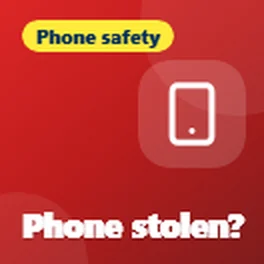
Phone Stolen
I wanted to share what to do if your phone is ever lost or stolen, and a couple of things worth doing now, just in case.
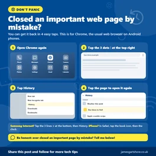
Reopen a Closed Web Page
Have you ever closed an important web page on your phone by mistake, like a form you were filling in or a page you needed? Don't panic, you can usually...
Switch Phone Network
I wanted to share a really easy way to switch your mobile phone network and keep your number, without having to ring up and be talked into staying.
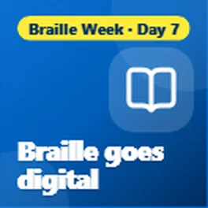
Braille Week Day 7
It's the last day of National Braille Week, so I wanted to finish with some ways technology is making braille easier to learn and use.
Get Online Week Day 2
It's day two of Get Online Week, and today I wanted to share some free places where you can learn online skills at your own pace.
Library eBooks
With the dark evenings drawing in, I wanted to share something lovely that a lot of people don't know about: you can borrow eBooks and audiobooks from...
Make your battery last all day
With the colder days coming in, here are a few simple ways to make your phone battery last longer, on both iPhone and Android.
Braille Week Day 6
It's day six of National Braille Week, and today's tips are for computers and laptops.
Get Online Week
This week is Get Online Week, a national campaign to help more people feel confident using the internet. Being online has become part of everyday life,...
Voice Clone Scam
I wanted to share a warning about a scam that's becoming more common: phone calls using a copy of a family member's voice.
Braille Week Day 5
It's day five of National Braille Week, and today I wanted to share how you can control your phone using just your voice.
Dyspraxia Day 7
It's the last day of Dyspraxia Awareness Week, and I wanted to finish by sharing some support for adults and students, because dyspraxia doesn't stop...
Landline Switchover
I wanted to share something important for anyone who has a personal alarm, like a pendant or a fall alarm, that works through their home phone line.
Braille Week Day 4
It's day four of National Braille Week, and today's tips are about books, radio and TV you can enjoy by listening.
Cut Your Bills
Today is the International Day for the Eradication of Poverty, so I wanted to share some free tools that can help you cut the cost of your broadband...
Dyspraxia Day 6
It's day six of Dyspraxia Awareness Week, and today I wanted to share some tech that helps with getting out and about.
Braille Week Day 3
It's day three of National Braille Week, and today I wanted to share some free ways to get your phone or computer to read things out loud for you.
Dyspraxia Day 5
It's day five of Dyspraxia Awareness Week, and today's tips are all about getting moving.
Food Apps
Today is World Food Day, so I wanted to share some free apps that can help you save money on food and stop good food from going to waste.
Restart a Heart
Today is Restart a Heart Day, so I wanted to share some free apps and websites that can help you learn CPR and be ready to help if someone's heart stops.
Braille Week Day 2
It's day two of National Braille Week, and today is also White Cane Safety Day, so I wanted to share some free apps that help people with sight loss...
Dyspraxia Day 4
It's day four of Dyspraxia Awareness Week, and today I wanted to share some free tools that make reading easier.
Fake Parcel Texts
I wanted to share a warning about fake parcel delivery texts, as they're one of the most common scams around at the moment.
Dyspraxia Day 3
It's day three of Dyspraxia Awareness Week, and today's tips are for anyone who finds handwriting hard.
Phone Eyesight Features
This week is National Braille Week, so I wanted to share some free features on your phone that can make a big difference if your eyesight isn't what it...
Old Phone or Laptop
Today is International E-Waste Day, which is a good reminder about all those old phones, tablets and laptops sitting in drawers. Most of us have at...
Dyspraxia Day 2
It's day two of Dyspraxia Awareness Week, and today I wanted to share some free tools that help with staying organised.
Phone in an Emergency
Today is the International Day for Disaster Risk Reduction, so I wanted to share a few features on your phone that could really help in an emergency....
Arthritis Day
Today is World Arthritis Day, so I wanted to share some features on your phone and laptop that can make life a lot easier if you have sore, stiff or...
Dyspraxia Week
This week is Dyspraxia Awareness Week, so I wanted to share some ways technology can help children with dyspraxia. The idea is to use tech to help them...
Mental Health Day
World Mental Health Day was on 10 October, so I wanted to share a few simple things your phone can already do to help you feel a bit calmer and more...
Online Communities
I wanted to share something that a lot of people don't realise is out there.
Find a Bad App
Following on from my post about scary pop-up adverts, here's what to do if ads keep appearing on your Android phone even when you're not using any app.
Scary Pop-up Ads
I wanted to share a tip about those scary pop-ups that sometimes appear on phones.
Sat Nav Update
Here's a quick tip for anyone who still uses a sat nav in the car.
Shortlisted!
I wanted to share a bit of news. I was recently shortlisted in the Time2Volunteer Awards 2026 for the volunteering I do with a local tech support...
Computer Safety
I wanted to share a few tips about keeping your computer safe, because a lot of people end up paying for antivirus they don't actually need.
What is a QR code?
I just wanted to share a quick tip about QR codes.
Heating Timers
With colder weather approaching, now is a good time to check your heating and hot water timers.
Heating Check
With winter approaching, now is a good time to test your heating, especially if it hasn't been used much this year.
Browse tips by topic
- Scams and staying safe (17)
- Fake news and online info (8)
- Health and wellbeing (23)
- Money (6)
- Getting online and staying connected (11)
- News (1)
- Everyday tech (44)
What people say
Thank you very much Sir
Yes definitely useful & thanks. I will share with anyone I feel would find your tips useful 😃
Helpful, thank you
Get new tips by email
A short email when I post a new tip. Free, and you can stop any time.
You'll get an email to confirm. Emails are sent by follow.it, and every email has an unsubscribe link.